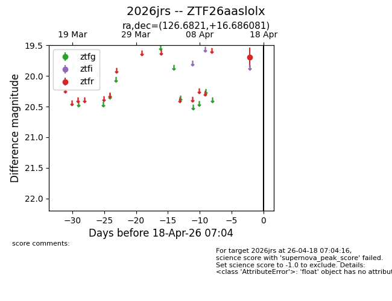
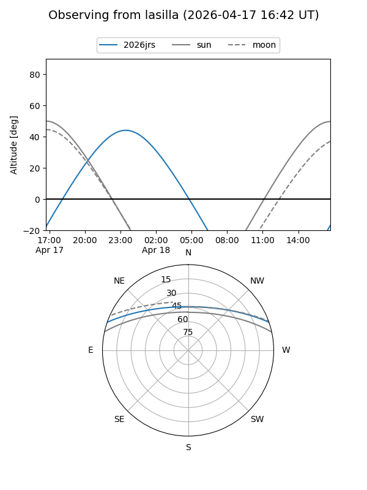
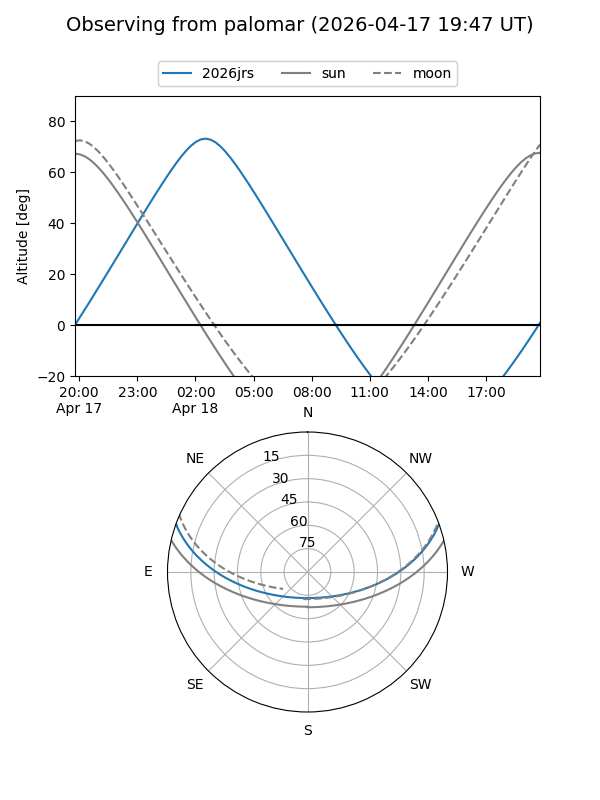

2026jrs
Target 2026jrs at 2026-04-18 07:09
Aliases and brokers:
FINK: link
Lasair: link
ALeRCE: link
TNS: link
YSE: link
alt names
ZTF26aaslolx (ztf,fink_ztf)
2026jrs (tns,yse)
Coordinates:
equatorial (ra, dec) = 126.6821,+16.68608
equatorial (HMS+DMS) = 08:26:43.71,+16:41:09.89
galactic (l, b) = (207.7726,+28.37638)
Flags:
Photometry:
last ztfr=19.70
1 ztfr detections
Lightcurve

Visibility


Additional plots